Префектура Окинава · город Окинава (Кодза) и Наха · еда и напитки
Кодза днём: колбасы tesio по немецким рецептам и магазин напитков LIQUID
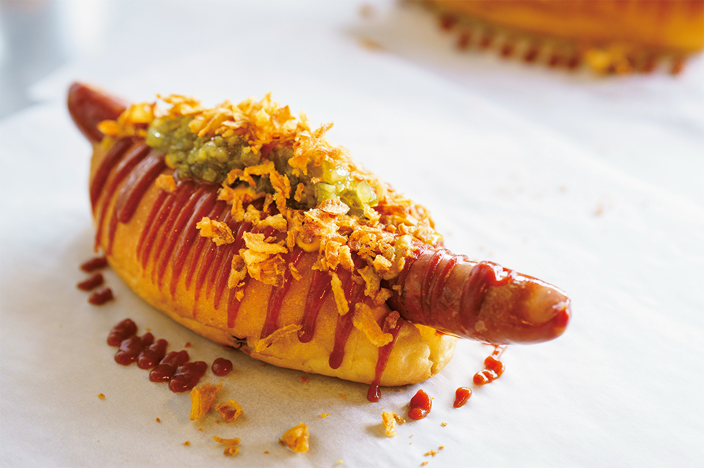
Кодзу в городе Окинава долго знали как ночной квартал у американской базы, куда днём никто не заглядывал. Всё начало меняться в 2017 году, когда на улице Гэто-дори открылась колбасная мастерская tesio, а рядом с её витринами поселился магазин напитков LIQUID.
Кодза
Мастерская там, где днём было пусто
Кодзой называют улицу Гэто-дори, которая тянется от ворот авиабазы Кадэна, и кварталы вокруг неё в городе Окинава, на середине главного острова. По вечерам здесь шумят бары для американских военных. Ещё несколько лет назад днём по улице почти никто не ходил, и у района была репутация не самого безопасного места.
Сегодня в выходные после полудня перед мастерской tesio стоит очередь. Хозяин мастерской Даити Минэй родом из Нахи. Впервые настоящую шаркютери, ветчину, колбасы и прочие мясные заготовки, он попробовал в Киото. На Окинаве, где свинину едят целиком, «всё, кроме хрюканья», он не знал ни одной мастерской, которая делала бы ветчину и колбасы сама.
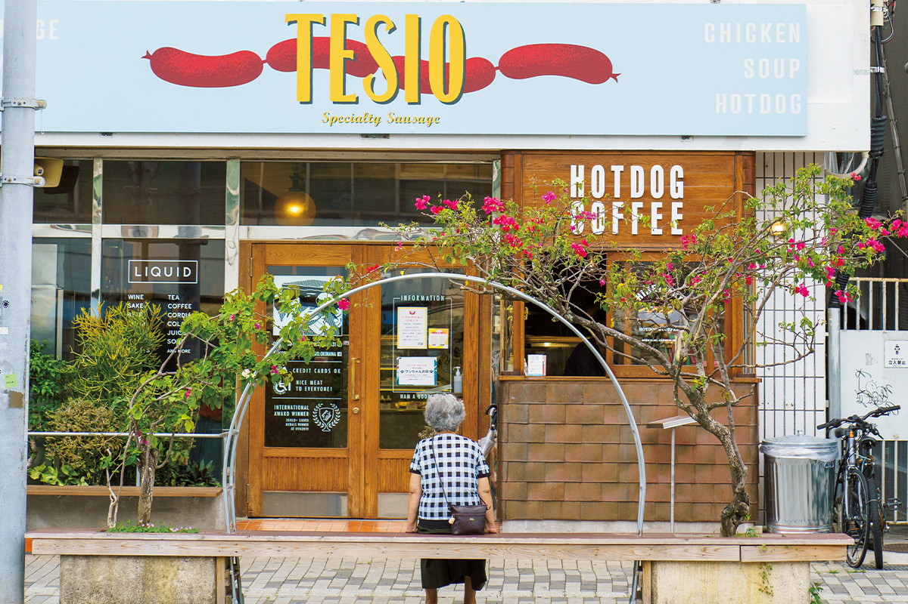
«Хочу делать шаркютери из окинавской свинины!»
хозяин tesio
Подтолкнуло его и то, что на американских базах колбас и ветчины съедают огромное количество. Даити Минэй упросил киотскую мастерскую взять его на работу, потом учился в Сидзуоке у мастеров, которые делают колбасы по немецкой технологии, и примерно через пять лет вернулся домой.
Помещение искали целый год. В Нахе и Тятане мешали шум производства и дым коптильни. Тогда дядя предложил ему первый этаж здания, которое только что купил в Кодзе. Знакомые отговаривали, но Даити Минэй рассудил наоборот: раз днём здесь никого нет, шум и дым никому не помешают. Изучая район, он обнаружил и кое-что неожиданное.
«Дети тех, кто после войны разбогател на торговле с американскими военными, получили хорошее образование и сами стали состоятельными людьми. Здесь много тех, кто готов платить за хорошие вещи. Я подумал, что Кодза, возможно, лучшее место для такой мастерской, как наша. И банку я сказал: если мы начнём здесь и за нами придут другие, у Кодзы появится новое лицо»
хозяин tesio
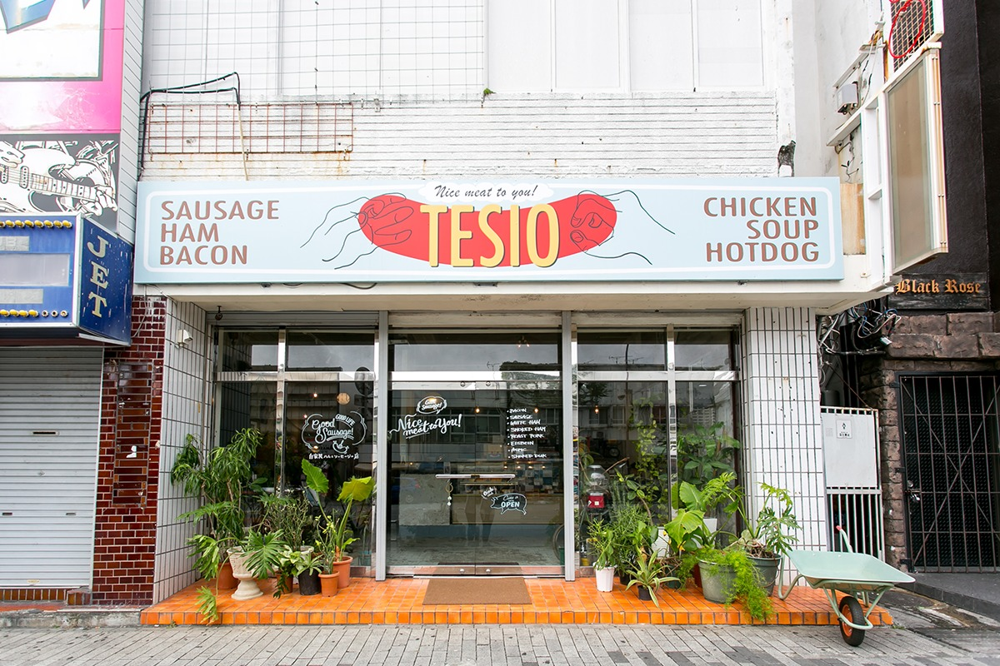
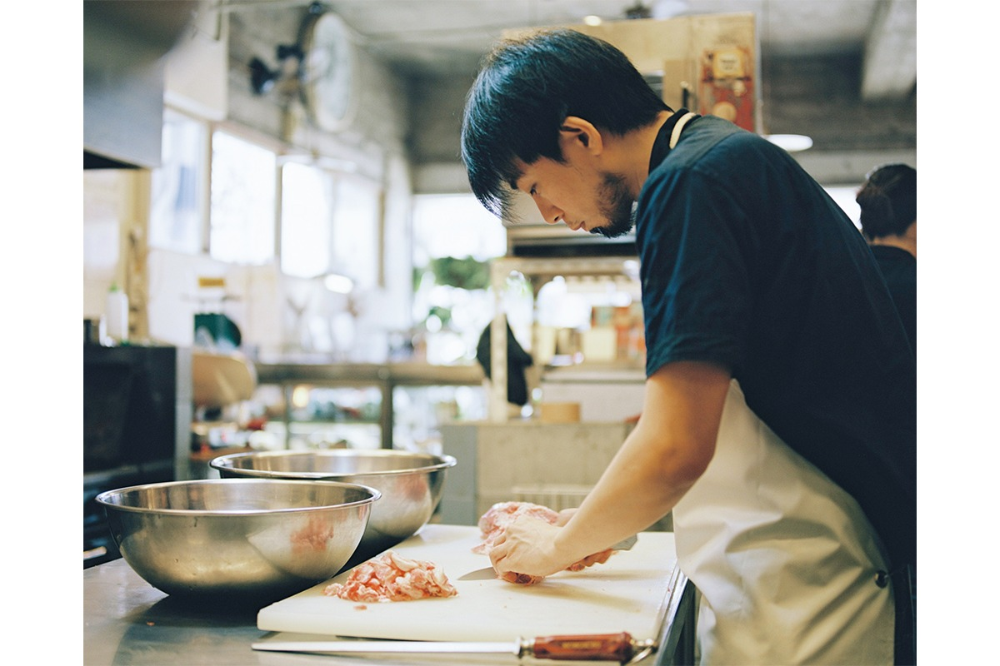
Мясо
Лавка за углом и золото в Германии
Важную роль сыграла мясная лавка «Фукухара сэйникутэн» прямо за мастерской. В 2022 году ей исполнилось 50 лет, а бабушка Даити Минэя была её постоянной покупательницей. Когда он попросил подбирать для него мясо по особым пропорциям и молоть его по-своему, хозяин лавки сразу согласился.
«Он сам ездит на животноводческий центр, своими глазами выбирает и покупает туши целиком. Отсюда и качество. Он выполнял все мои капризы по обработке, учил меня разделывать туши и снимать мясо с кости»
хозяин tesio
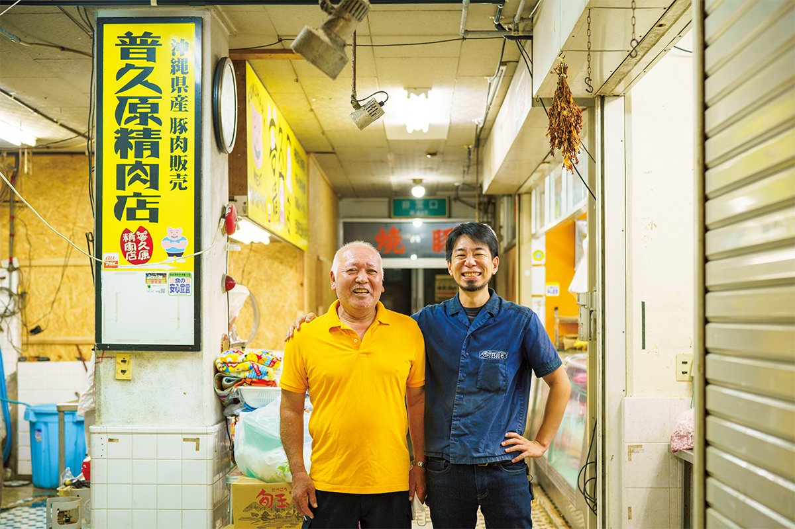
Разработка шла трудно, и открытие пришлось отложить примерно на два месяца. Зато получились колбасы и ветчина, в которых окинавская свинина встретилась с немецкой технологией. После открытия хозяин продолжил искать свой вкус и текстуру. В дело пошёл, например, жмых шиквасы, местного цитруса, который остаётся после отжима сока: из него делают колбасу, и ничего не пропадает.
В 2019 году tesio отправила три изделия на IFFA, крупнейшую международную выставку мясной индустрии, которая проходит в Германии раз в три года, и все три получили награды. Золото взяли ветчинная колбаса «бирсинкен» и франкфуртер для хот-догов, серебро досталось колбасе SAMURAI.
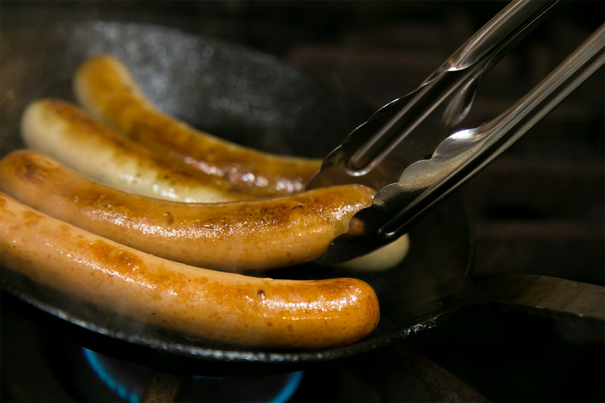
Когда в пандемию путешествовать стало почти невозможно, мастерская выпустила набор колбас по мотивам кухонь мира: с американским чизбургером, итальянской пиццей, японским одэном. Получалось кругосветное путешествие на одной тарелке.
Как делают
Чоризо с корэгусу
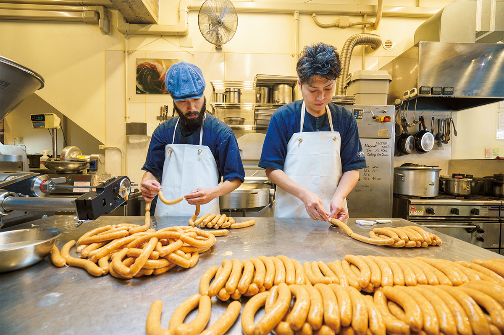
Корэгусу, окинавская приправа из острого перца, настоянного на авамори, стала одной из «местных» колбас tesio. Путь от мяса до готовой чоризо занимает несколько дней. Сначала смешивают травы, потом мясо превращают в кремообразную эмульсию и добавляют к ней мясо крупного помола. Из 30 кг фарша получается около 500 колбасок. Их пропаривают, сушат и коптят, а лучше всего они на вкус через день или два, когда вкус соберётся.
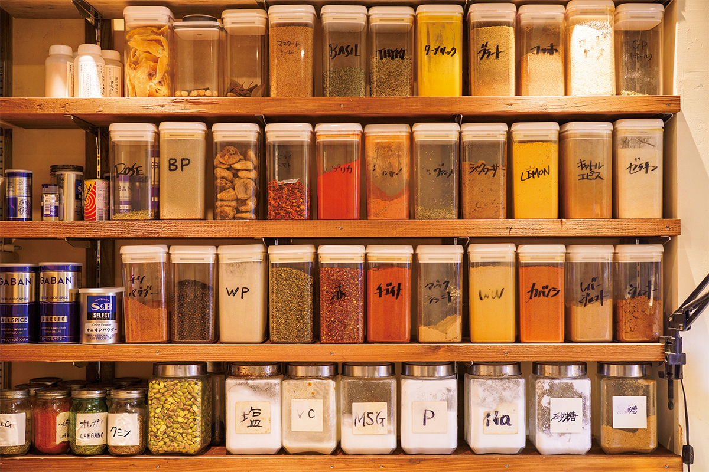
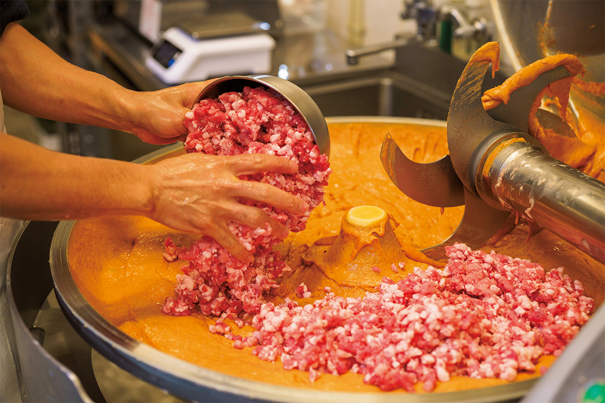
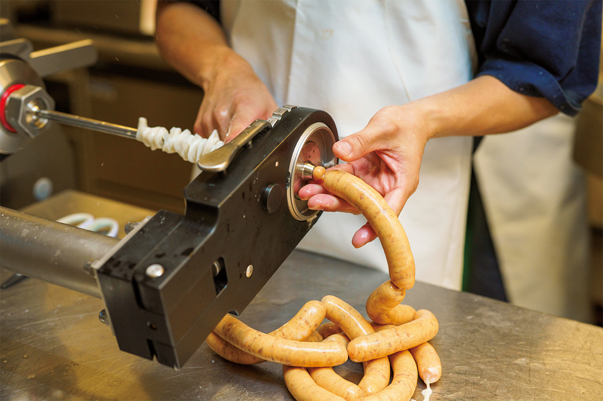
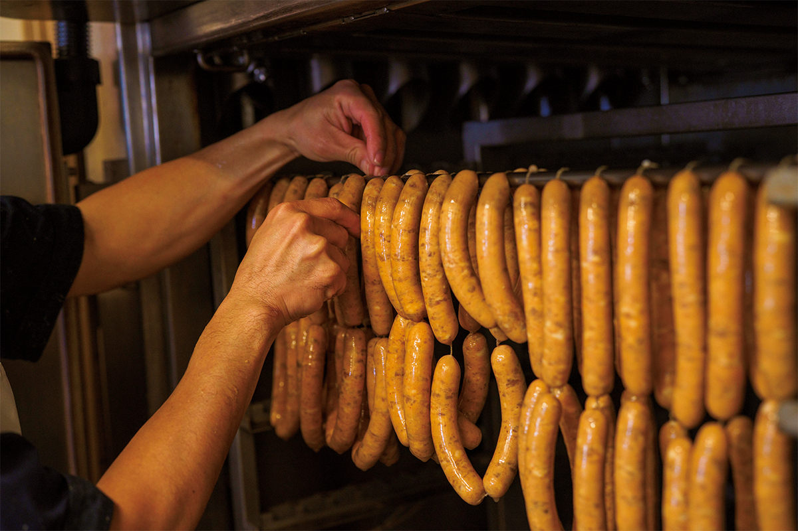
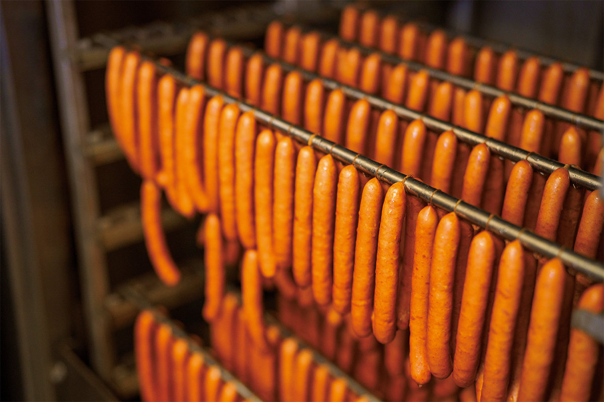
Рынок
Здание, которое становится рынком
Старое здание, где когда-то был клуб, занимает 132 квадратных метра, но на первых порах денег хватило, чтобы обустроить под магазин только половину. Свободную часть хозяин отдал под выставки фотографий и работы художников, дегустации пива и вина. Каждое событие вызывало разговоры, и про tesio узнало много людей. Закрепилась и репутация: в tesio всегда что-нибудь происходит.
К 2022 году на пустовавшем месте появились кофейный уголок «Хинэттари», лавка итальянских продуктов «Танто тэмпо» и уголок LIQUID с крафтовым пивом и вином. Получилось что-то вроде маленького рынка.
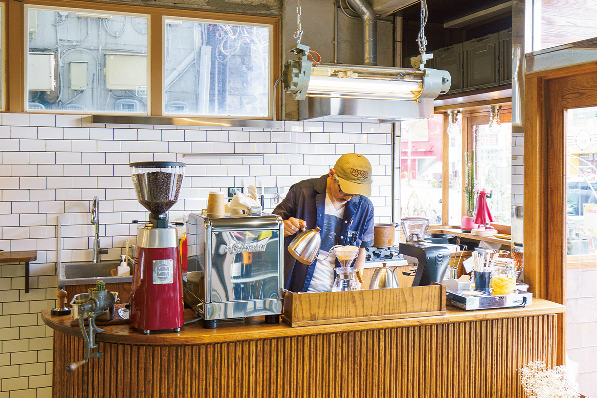
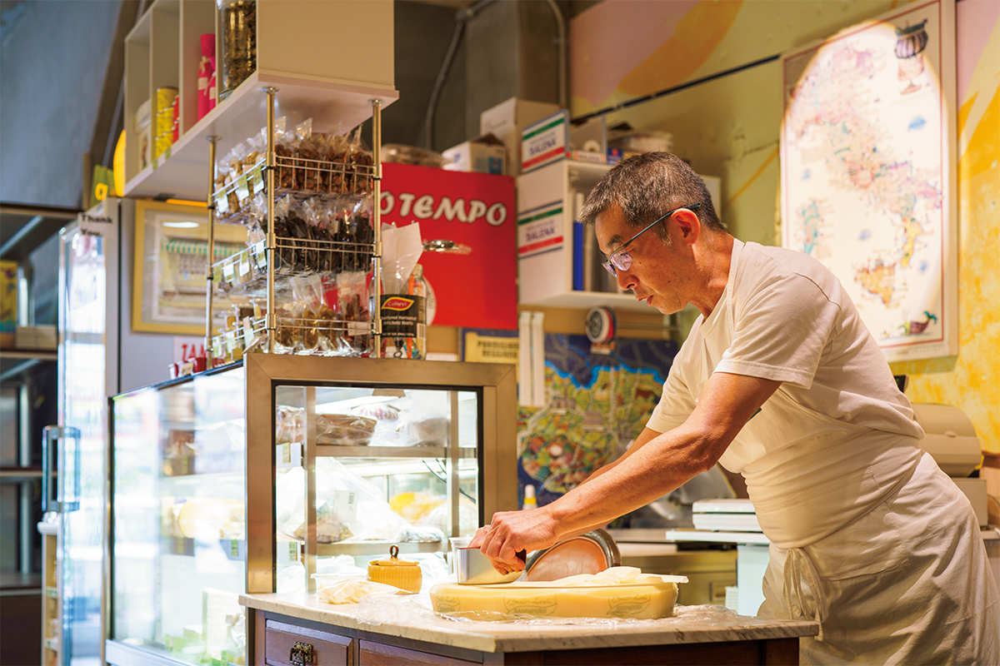
Несколько лет назад хозяин узнал, что в здании есть подвал. Когда вскрыли пол, под ним оказалось странное помещение площадью около 13 квадратных метров, и в 2022 году его перестраивали под новое пространство.
«Мне кажется, главное в ремесле это общение, которое вокруг него возникает. Кодза сейчас становится местом, которое притягивает людей историями, родившимися из живых связей между ними»
хозяин tesio
После открытия tesio в Кодзе появились пивоварня, обжарщики кофе и шоколадная мастерская. Из «опасного квартала» район постепенно превращается в улицу мастерских со своим характером.
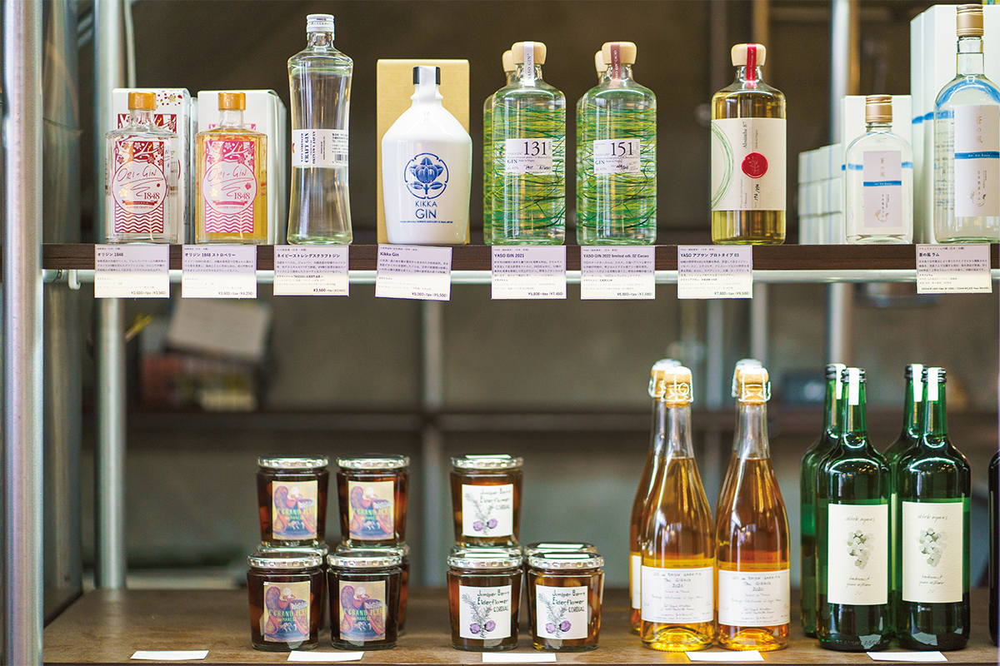
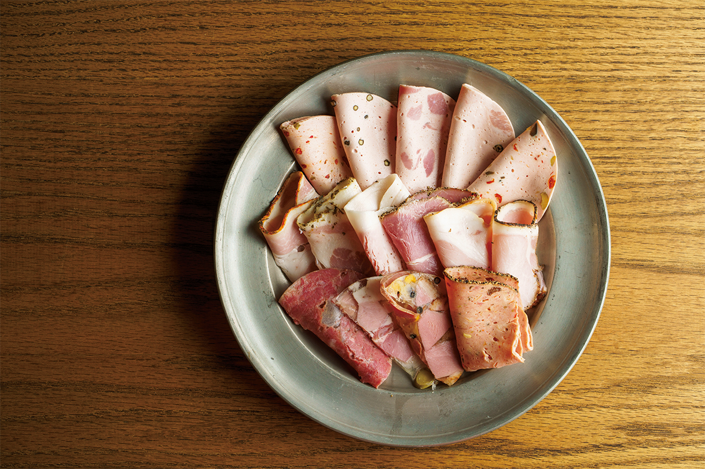
tesio
- Адрес
- префектура Окинава, город Окинава, Тюо, 1-10-3
- Телефон
- +81 98-953-1131
- Часы работы
- 11:00–18:00
- Выходные
- понедельник
- Сайт
- tesio.okinawa
LIQUID
Магазин всего, что пьют
LIQUID открылся в июле 2017 года в районе Какадзу города Гинован, почти одновременно с tesio. Это магазин всего, что связано с питьём: в галерее продавали посуду для напитков, а в винной лавке собирали напитки со всей Японии и из-за рубежа. Позже у LIQUID появилась собственная марка ISLANDS BEVERAGE: вместе с мастерами с островов она выпускает крафтовый джин, чай и другие напитки из местного сырья.
Мастерские, открывшиеся в один год, с самого начала работали вместе. 10 сентября 2020 года, к трёхлетию LIQUID, внутри tesio открылась лавка LIQUID. В ней собрали напитки, от чая до крепкого алкоголя, которые подходят к ветчине и колбасам tesio и к еде Кодзы.
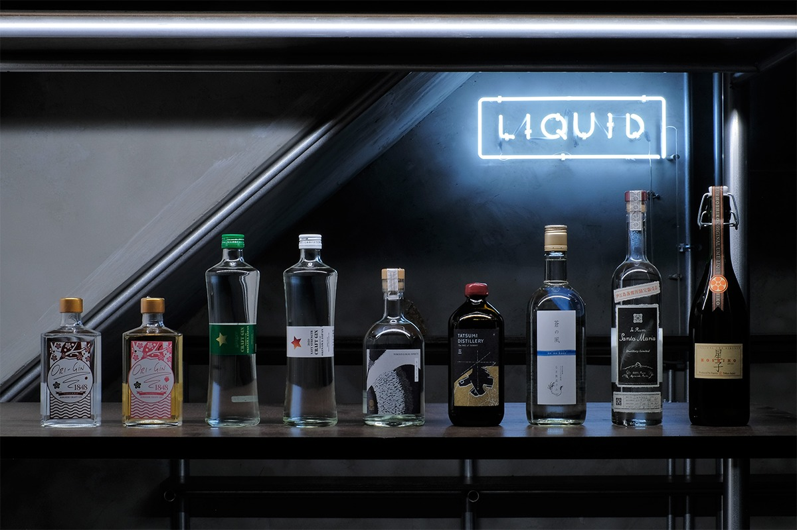
К открытию винокурня Alchemiae Tatsumi Distillery из префектуры Гифу сделала для LIQUID джин First Essence New Moon «Рю». Его основа это рисовый и цикориевый сётю, а среди трав и плодов можжевельник, маракуйя, манго, цветы гардении, бузина, мята, тимьян, корень цикория и клиторея. Всего выпустили 85 бутылок. А мастерская обжарки чая «Сакураи» составила для лавки собственную смесь чайных листьев.
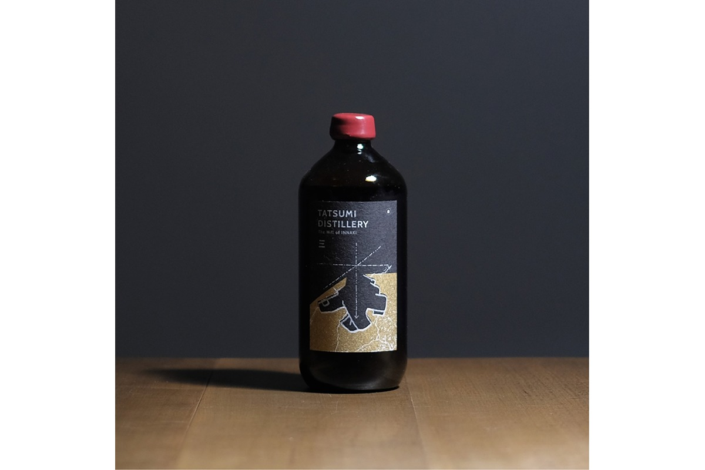
Среди производителей, с которыми работала лавка в 2020 году, окинавские спиртовые заводы «Исикава сюдзодзё» и Mizuho Shuzo, чайная ферма «Канагава сэйтя», кордиалы «Сэйхэй», а ещё натуральные вина Ямагаты, крафтовое пиво Ибараки и Окаямы, сакэ из Нары и кофе из Фукуоки.
Наха
LIQUID THE STORE в Цубое
1 ноября 2021 года LIQUID открыл большой магазин LIQUID THE STORE в Нахе, в квартале Цубоя, где издавна делают окинавскую керамику ятимун. Магазин поделён на четыре зоны, четыре способа «пить»: галерея посуды GALLERY, винный погреб CELLAR с натуральным вином, кладовая PANTRY с чаем, кофе, сакэ и крепкими напитками и стойка STAND, где можно выпить стоя.
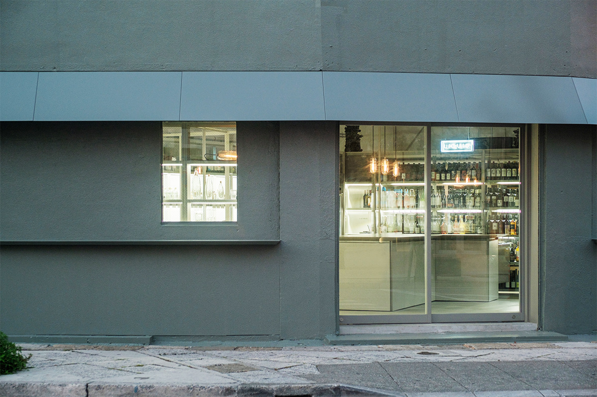
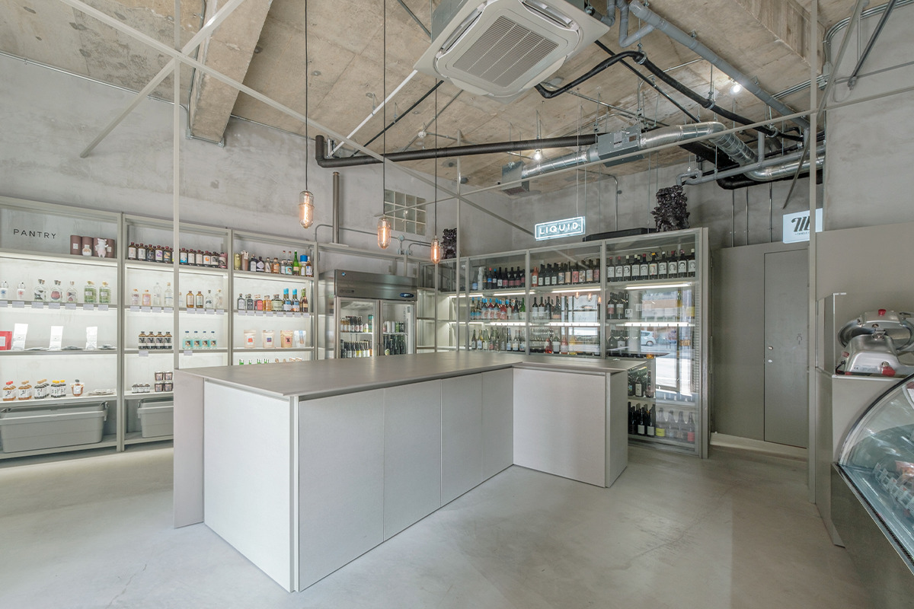
Интерьер придумали архитекторы бюро TAILAND и A studio. Архитектор рассказывал, что впервые попал в LIQUID весной 2020 года, в бывший дом для американских военных на холме в Гиноване: простую бетонную коробку с серыми стенами и стальными панелями, где стояли бутылки от крафтового пива до авамори и красивая посуда. Больше всего ему запомнились лампы и стекло стеклодува PETER IVY из Тоямы, выдутые вручную, с пузырьками и неровностями. Три такие лампы висят теперь над главным столом в Цубое, и проект начинался с этого мягкого света.
«Большой стол под лампами вмещает всё: здесь пьют, разговаривают, раскладывают товары. Вокруг него галерея, кладовая, винный погреб и колбасная. Информации много, и это весело, но магазину, который так увлечён всем, что связано с питьём, нужен покой. Поэтому столы, полки и перегородки мы сделали из одного стального уголка и повторили его в решётке на потолке. Получился ритм, который успокаивает»
архитектор
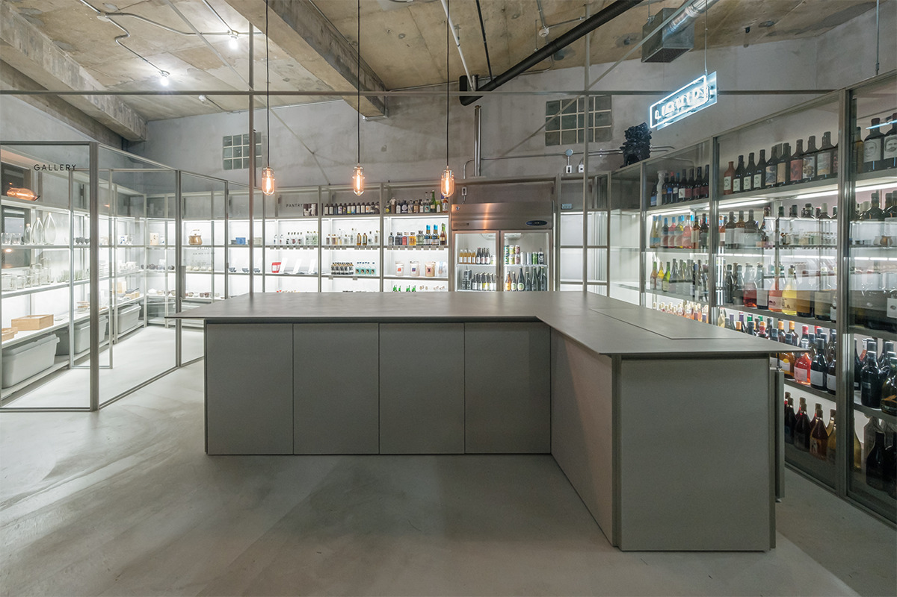
Винный погреб CELLAR
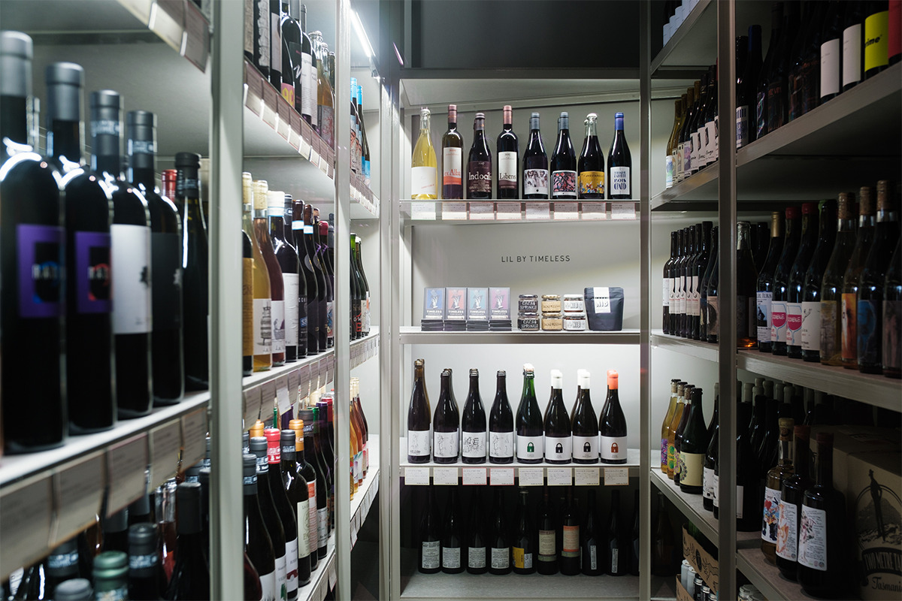
В 2021 году в магазине открылся и уголок LIL by TIMELESS шоколадной мастерской TIMELESS CHOCOLATE из Тятана.
Галерея GALLERY
В галерее продают посуду для напитков, в 2021 году она открывалась только по воскресеньям и понедельникам. Для джина марки ISLANDS BEVERAGE окинавский керамист сделал отдельные стаканы, чтобы пить его со льдом.
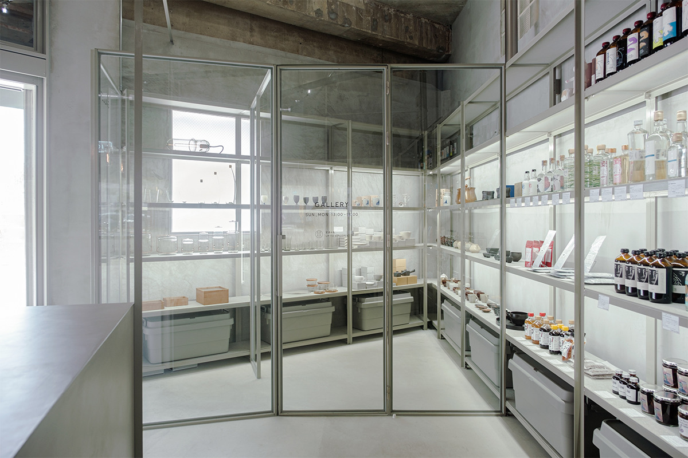
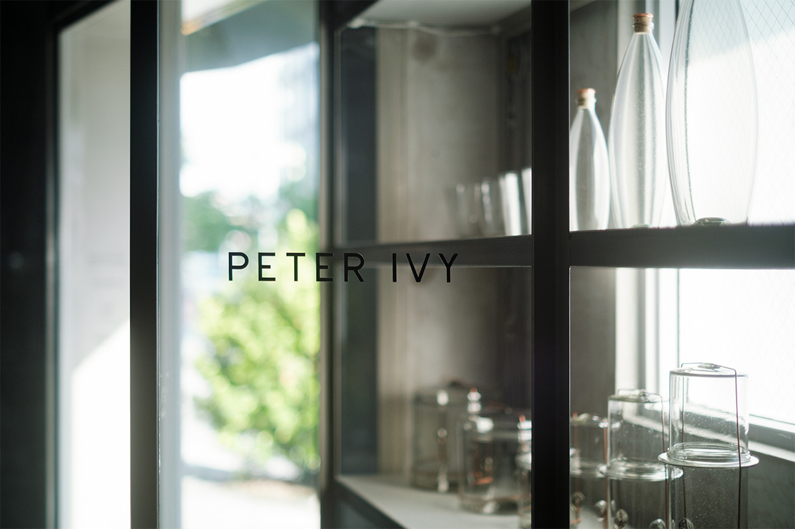
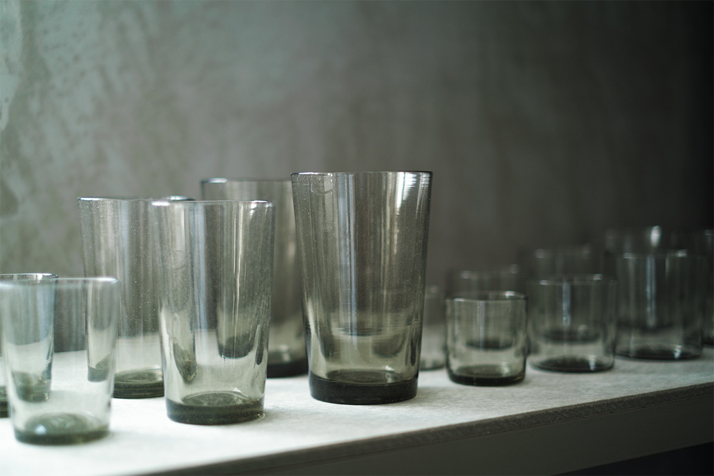
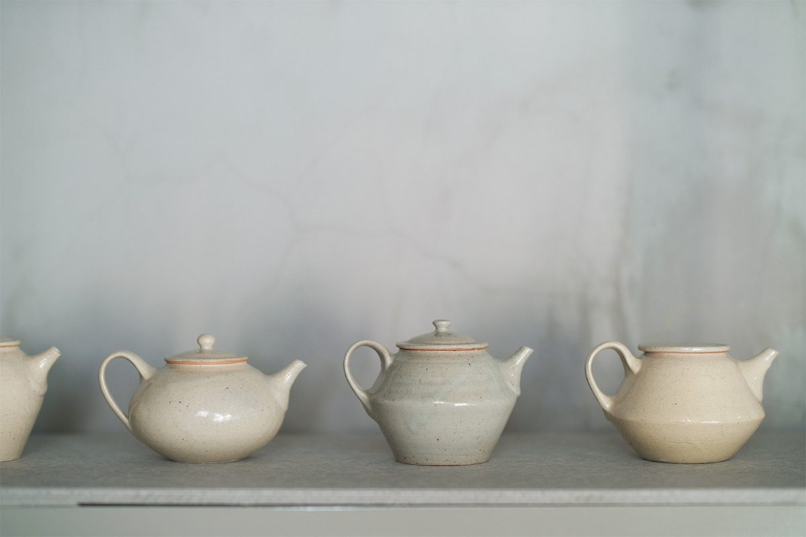
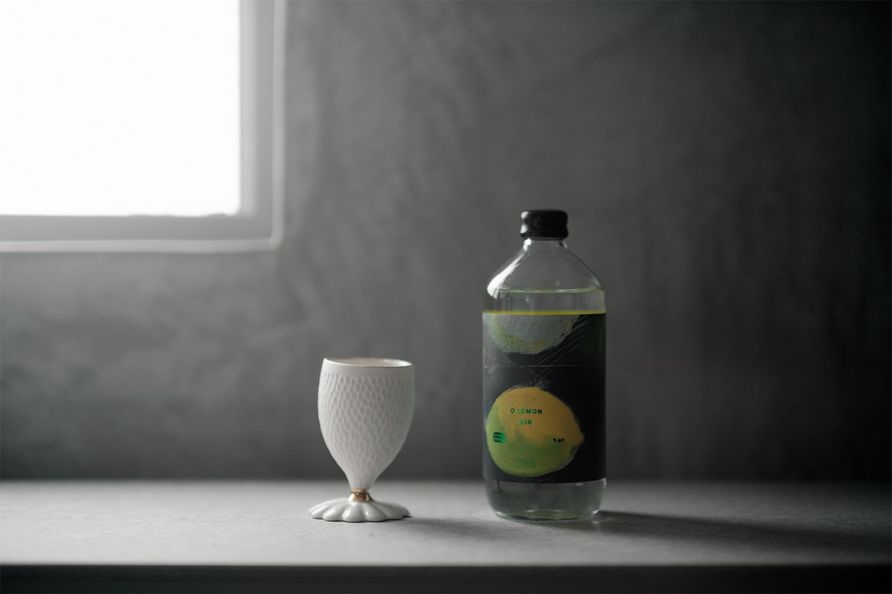
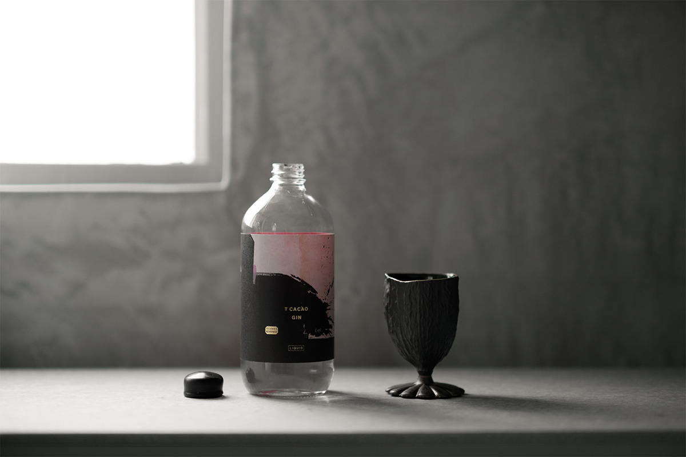
Кладовая PANTRY и стойка STAND
В кладовой стоят чай, кофе, сакэ и крепкие напитки. В 2021 году у стойки к напиткам LIQUID подавали ветчину и колбасы из tesio 2×, отделения tesio в Нахе. В 2026 году tesio 2× закрылся.
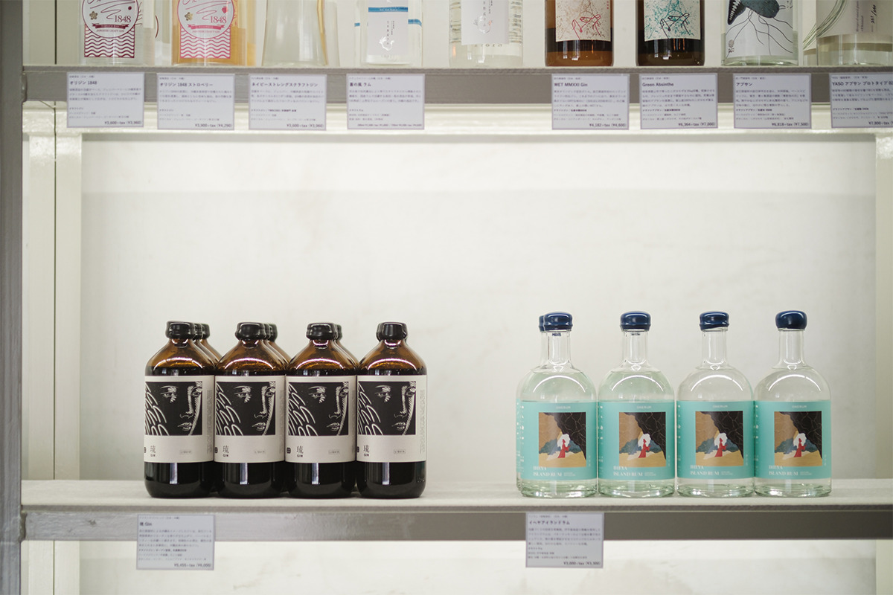
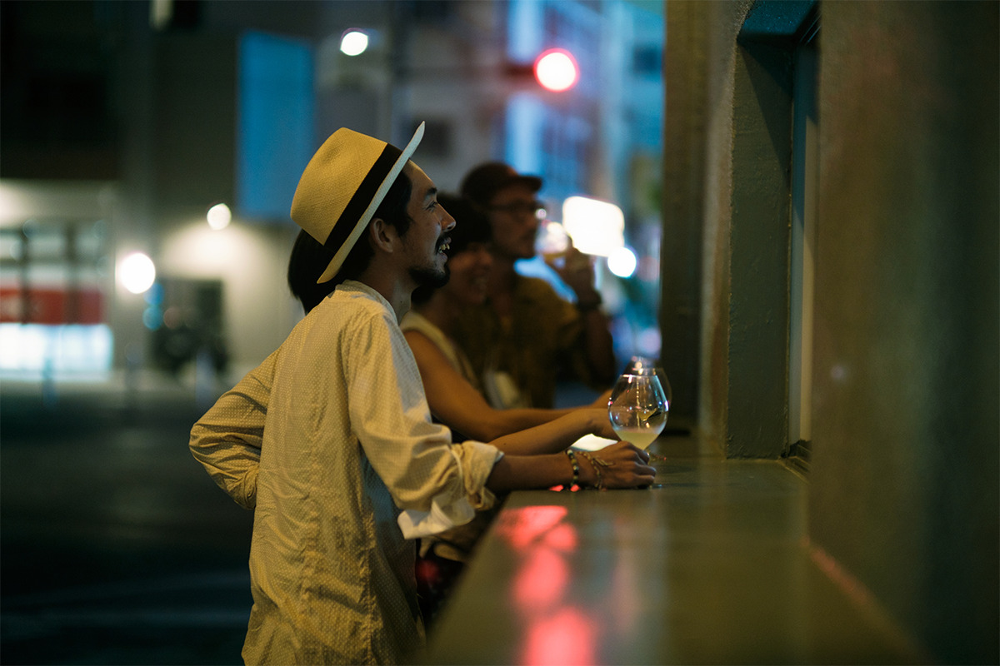
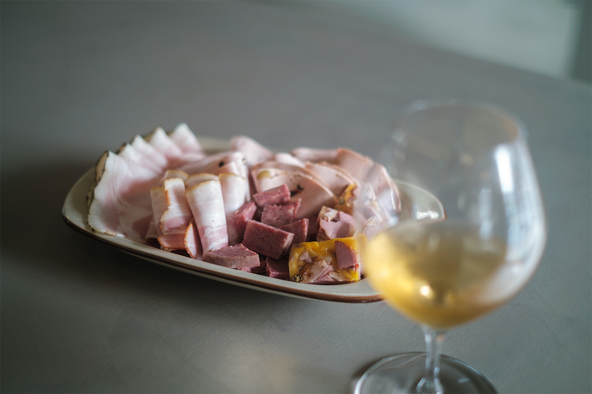
LIQUID THE STORE
- Адрес
- префектура Окинава, Наха, Цубоя, 1-1-21, 1-й этаж
- Телефон
- +81 98-988-3607
- Часы работы
- 13:00–21:00
- Выходные
- вторник, среда, четверг
- Как добраться
- около 15 минут на машине от аэропорта, около 11 минут пешком от станции монорельса Макиси, около 3 минут пешком от остановки автобуса Кайнан
Где ещё
Колбасы tesio в Нахе
Колбасы и бекон tesio в 2022 году подавали и в нескольких заведениях Нахи. В кафе CONTE в Сюри готовят из окинавских продуктов и продают колбасы tesio. В ресторане ESTINATE LOUNGE на завтрак делали голландский панкейк с беконом tesio, а на ужин карбонару. В пивном баре «Кодза бакусю кобо» в квартале Кумодзи, филиале пивоварни из Кодзы, к крафтовому пиву подавали шаркютери tesio.
CONTE
- Адрес
- префектура Окинава, Наха, Сюри-Акататё, 1-17
- Телефон
- +81 98-943-6239
- Часы работы
- 11:00–17:00 (последний заказ в 16:00)
- Выходные
- понедельник, среда
- Сайт
- conte.okinawa
ESTINATE LOUNGE
- Адрес
- префектура Окинава, Наха, Мацуяма, 2-3-11
- Телефон
- +81 98-943-4900
- Часы работы
- 7:30–22:00, в пятницу и субботу до 23:00
- Выходные
- без выходных
«Кодза бакусю кобо», Кумодзи
- Адрес
- префектура Окинава, Наха, Кумодзи, 3-23-6, здание Асато, 1-й этаж
- Телефон
- +81 98-800-2844
- Часы работы
- 17:00–24:00 (последний заказ в 23:00)
- Выходные
- воскресенье
Фото: Тётаро Оован.